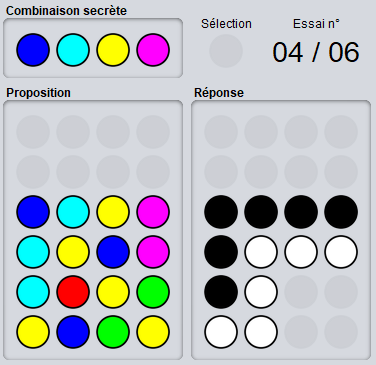

Le but du Mastermind est de découvrir la combinaison secrète à x couleurs de l'adversaire (le défenseur). Pour ce faire, l'attaquant fait une proposition de couleurs. Le défenseur indique pour chaque proposition le nombre de couleur de la proposition qui apparaissent à la bonne place et à la mauvaise place dans la combinaison secrète.
L'attaquant doit deviner la combinaison secrète en un nombre limité d'essais.
Les pions noirs indiquent le nombre de couleurs qui sont bien placées.
Les pions blancs indiquent le nombre de couleurs qui sont mal placées.
